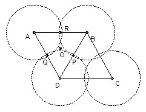

The parallelogram ABCD has AB = a, AD = 1, angle BAD = A, and the triangle ABD has all angles acute. Prove that circles radius 1 and center A, B, C, D cover the parallelogram iff
a ≤ cos A + √3 sin A.
Solution

Evidently the parallelogram is a red herring, since the circles cover it iff and only if the three circles center A, B, D cover the triangle ABD.
The three circles radius x and centers the three vertices cover an acute-angled triangle ABD iff x is at least R, the circumradius. The circumcenter O is a distance R from each vertex, so the condition is clearly necessary. If the midpoints of BD, DA, AB are P, Q, R, then the circle center A, radius R covers the quadrilateral AQOR, the circle center B, radius R covers the quadrilateral BROP, and the circle center D radius R covers the quadrilateral DPOQ, so the condition is also sufficient.
We need an expression for R in terms of a and A. We can express BD two ways: 2R sin A, and √(a2 + 1 - 2a cos A). So a necessary and sufficient condition for the covering is 4 sin2A ≥ (a2 + 1 - 2a cos A), which reduces to a ≤ cos A + √3 sin A, since cos A ≤ a (the foot of the perpendicular from D onto AB must lie between A and B).

Solutions are also available in: Samuel L Greitzer, International Mathematical Olympiads 1959-1977, MAA 1978, and in István Reiman, International Mathematical Olympiad 1959-1999, ISBN 189-8855-48-X.
© John Scholes
jscholes@kalva.demon.co.uk
4 Oct 1998
Last corrected/updated 27 Oct 2002